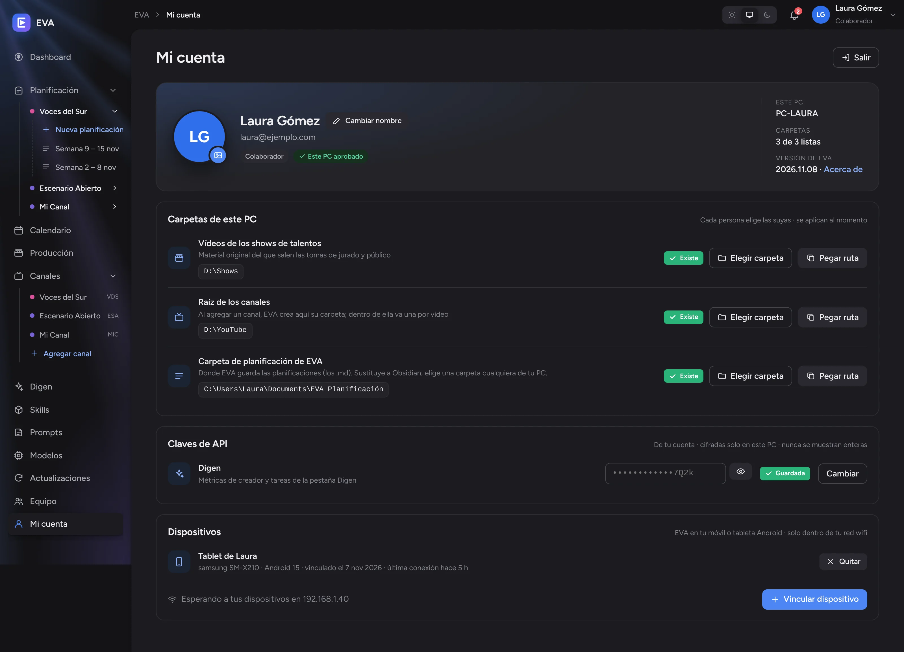
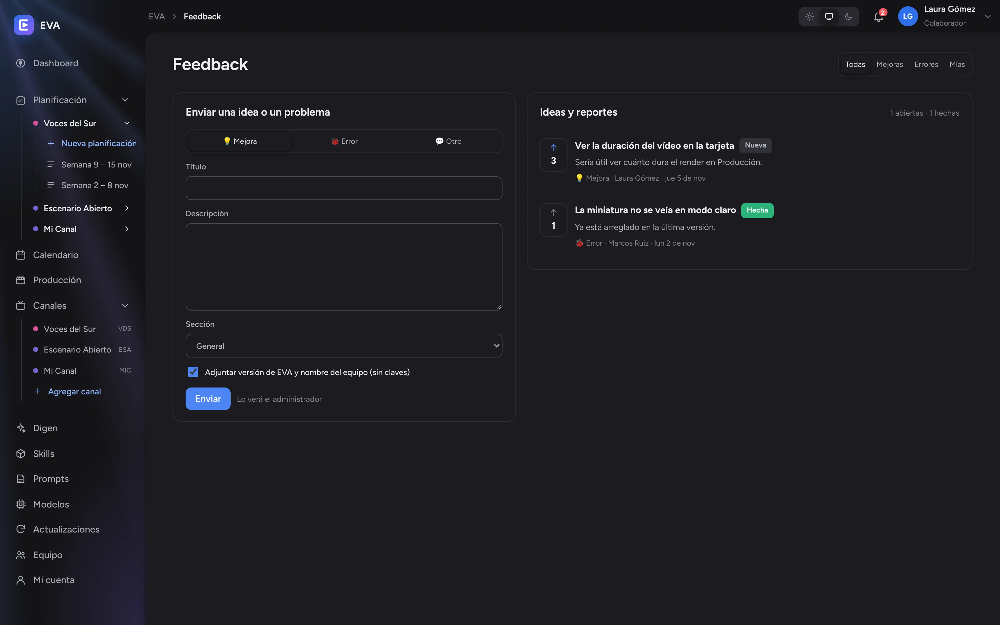

Sin cortar clips
EVA encuentra los fragmentos de cada actuación, elige las mejores tomas y descarta las que no encajan. No tienes que preparar nada a mano.
EVA une una planificación inteligente con la edición autónoma de vídeos, pensada para canales de shows de talentos. Tú decides qué se publica; EVA planifica, monta, revisa y entrega el vídeo terminado en DaVinci Resolve.

Qué es EVA
Editar un vídeo de talentos lleva horas: buscar la actuación, cortar tomas, decidir cuándo entra el jurado, cuidar el ritmo. EVA hace ese trabajo de principio a fin y te deja a ti lo importante: aprobar el plan y revisar el resultado.
EVA encuentra los fragmentos de cada actuación, elige las mejores tomas y descarta las que no encajan. No tienes que preparar nada a mano.
Qué va primero, dónde entra cada reacción del jurado y cómo sube la emoción hasta el final: EVA lo decide como lo haría un editor del oficio.
Cada montaje se verifica (sin cortes bruscos, sin repeticiones, con buena sincronía) y se revisa el render final antes de darlo por terminado.
La semana se propone a partir de los resultados reales de tus canales: qué funcionó, qué no y qué toca repetir o evitar.
Cómo funciona
Pulsas Planificar y EVA propone los vídeos de la semana con su historia, título y miniatura.
Revisas la propuesta y la apruebas, o pides cambios con tus palabras.
Cada vídeo aprobado aparece en Producción con su ficha, narración, canción y concursante.
Pulsas Editar vídeo y EVA monta, verifica y renderiza en DaVinci Resolve.
El vídeo terminado queda en la carpeta del canal, listo para subir el día previsto.
Lo que EVA tiene en cuenta al planificar

Ediciones en paralelo
Cada edición trabaja en su propia ventana de Claude Code dentro de EVA. Mientras una renderiza, otra prepara el plan de montaje y la tercera revisa los clips. Puedes seguirlas todas desde Producción, o desde la app de Claude en el móvil.
● Leo la narración, la canción y la ficha. ● Elijo las mejores tomas (14 de 32). ● Plan de montaje: entrada, actuación, reacciones del jurado y final. ● Verificación: todo correcto. ● Render final… 62 %
● Leo la narración, la canción y la ficha. ● Elijo las mejores tomas (11 de 27). ● Plan de montaje: dónde entra cada reacción y cómo sube la emoción. ✻ Pensando…
● Leo la narración, la canción y la ficha. ● Reviso los clips: caras, manos y sincronía con la voz. ✳ Revisando clips…
Manual
Sigue el orden: primero instala y entra, después recorre cada sección. Los números naranjas de las capturas señalan los botones de los que habla cada texto.
Necesitas cuatro cosas antes de abrir EVA por primera vez:
La forma más sencilla es desde el propio EVA: si falta, Producción te muestra el botón Instalar Claude Code y lo instala con un clic con el instalador oficial. Si prefieres hacerlo a mano:
PS> irm https://claude.ai/install.ps1 | iex
Abre EVA y pulsa Entrar con Google con la cuenta que autorizó el administrador. Por seguridad, cada PC nuevo debe aprobarlo el administrador la primera vez; después la sesión queda guardada.

La primera vez, EVA te guía en cuatro pasos: Tú (tu nombre y foto, que verá el resto del equipo), Carpetas (dónde están tus vídeos y dónde guardará EVA lo que crea), Claves y Listo. Puedes omitirlo y hacerlo después en Mi cuenta.

Cada persona tiene un rol, y cada canal del equipo tiene su nivel de acceso. Así cada uno ve justo lo que necesita.
Autoriza a las personas, aprueba los PC, decide los permisos y publica las versiones de EVA.
Planifica, produce y edita en los canales del equipo que le asignen, y en sus canales propios.
Trabaja solo con sus canales propios. No ve nada del equipo; lo suyo se queda en lo suyo.
| Acceso a un canal | Qué permite |
|---|---|
| Colabora | Ve y cambia sus paquetes, planifica, produce y edita. |
| Solo planificar | Ve su calendario y sus resultados para no repetir, sin ver paquetes ni planes. |
| Oculto | No ve el canal ni nada de él. Es el valor por defecto. |
Además, el administrador puede dar o quitar a cada colaborador el acceso a las métricas de YouTube y a ver ingresos (solo de los canales en los que colabora). En Equipo ves quién forma parte del equipo, su rol y los canales que compartís.

Tu resumen del mes: lo que tienes por cobrar, lo que llevas este mes, suscriptores y vistas, con la comparación frente al mes anterior. La gráfica muestra los ingresos de cada día por canal y, a la derecha, cuánto te tocaría a final de mes si sigue el ritmo actual.

Aquí nace cada semana. Arriba eliges el canal; en el menú lateral, cada canal tiene Nueva planificación y la lista de sus semanas. Al pulsar Planificar, EVA analiza los resultados, mira el calendario de los demás canales y te propone los vídeos de la semana.

| Pestaña | Contenido |
|---|---|
| Resumen | Ficha del vídeo (publicación, concursante, avance inicial) y la descripción para YouTube, lista para copiar. |
| Miniaturas | Las variantes de título y miniatura para probar (A, B, C). |
| Narración | El texto que se locuta y su aprobación. |
| Canción | El tema que interpreta el concursante y sus datos. |
| Concursante | La historia del personaje y la descripción para su imagen. |

Cuando la propuesta está lista, verás la lista de vídeos con sus días y horas, un resumen de la idea de la semana y la señal Cumple las reglas.
Todos tus vídeos de la semana en tarjetas. Toca una para ver su avance por etapas: Producción, Guion, Clips, Plan, Verificación, Montaje, Render, Revisión y Terminado. El reloj marca el tiempo activo de trabajo.
Para editar, toca la tarjeta del vídeo y pulsa Editar vídeo. EVA abre su ventana de Claude Code y se pone a trabajar. Puedes lanzar hasta tres ediciones a la vez: cada una tiene su ventana y comparten DaVinci Resolve por turnos, sin pisarse.
Cada edición y cada planificación tiene su propia ventana de Claude Code dentro de EVA. Ahí ves lo que va haciendo en lenguaje claro y puedes escribirle si quieres cambiar algo. No necesitas saber programar: le hablas como a un editor.
Todos los vídeos del mes, publicados y por salir, de todos tus canales. Sirve para ver de un vistazo qué sale cada día y para que la planificación no repita artistas.

En el menú lateral, Canales lista los canales a los que tienes acceso. Pulsa Agregar canal para crear uno propio: escribe el nombre y un código corto de 2 a 5 letras. EVA crea su carpeta dentro de tu raíz de canales.

La ficha de cada canal muestra cuántos vídeos hay planificados, en producción y publicados, su carpeta en este PC y sus ajustes:

Con las métricas conectadas, la planificación sabe qué funciona en tu canal y el Dashboard muestra tus ingresos reales. Todo se queda en tu PC.
Tu nombre y foto, las carpetas de este PC, tus claves y tus dispositivos. Cada persona elige sus carpetas; los cambios se aplican al momento.

EVA también va contigo en el móvil o la tableta Android: dashboard, ingresos, calendario, planificación y producción, con los avisos del PC. La conexión es directa con tu PC por tu wifi y va cifrada; fuera de casa, la app te enseña los últimos datos que vio.


Vincular. Pon un nombre al dispositivo y escanea.

Escáner. Apunta al código de tu PC.

Inicio. Tus ingresos y el resumen del mes.

Producción. El estado de cada vídeo.

Calendario. Qué sale cada día.

Menú. Toca tu avatar para el resto de secciones.
Para desvincular un móvil, pulsa Quitar en Mi cuenta → Dispositivos del PC, o Desvincular este dispositivo desde la propia app.
La campana de arriba reúne los avisos: una edición terminada, un dispositivo vinculado, una nueva versión de EVA. Marcar como leídas los da por vistos y Limpiar los borra.

¿Tienes una idea o algo no funciona? En Feedback elige Mejora, Error u Otro, escribe un título y una descripción y pulsa Enviar. A la derecha ves las ideas de todos: vota las que te interesen y sigue su estado (Nueva o Hecha).

Sí. La edición ocurre en tu PC, con tu DaVinci Resolve. Puedes cerrar la ventana de EVA o seguir el avance desde el móvil, pero el PC debe seguir encendido.
Sí, aunque DaVinci Resolve estará ocupado. Evita tocar la línea de tiempo del proyecto que se está montando.
Porque tu acceso a ese canal es Oculto. Pide al administrador que te dé acceso de Colabora o Solo planificar.
EVA espera a que vuelva la conexión y vuelve a enlazar la conversación con la app de Claude. El trabajo hecho no se pierde.
Hasta tres. Cada uno en su ventana; DaVinci Resolve se reparte por turnos entre ellos.
No. Se guardan cifradas en tu PC y EVA nunca las muestra enteras, ni siquiera a ti.